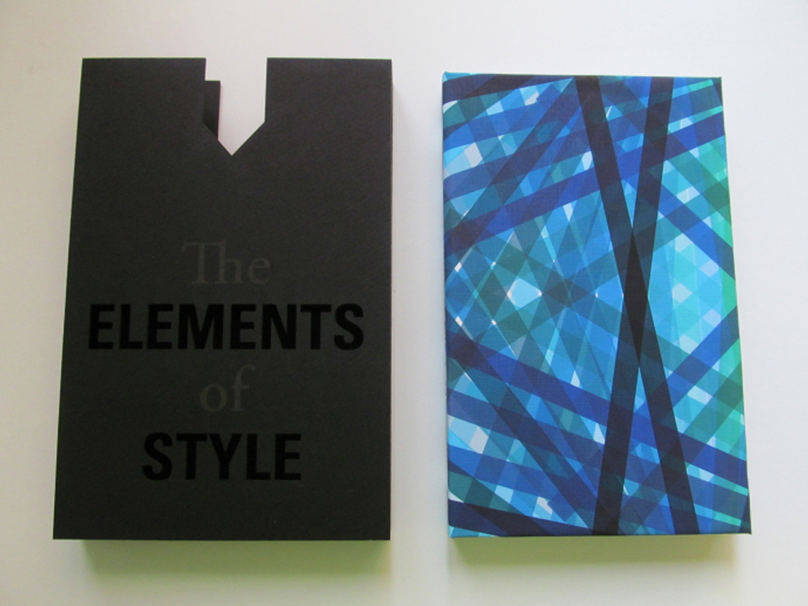

ebola infographic
This infographic was made to help illustrate all of the factors that allowed ebola to thrive in West Africa. The factors include the history of ebola ( all recorded infections and deaths from Ebola's first outbreak in 1976 until Nov 5th 2014), doctor-to patient-ratios, total expenditure on health per capita, times of civil unrest, illiteracy rates, and poverty rates. The infographic compares the four affected countries (Liberia, Sierra Leone, Guinea, and Nigeria) to the United States. It shows how the region of West Africa was unprepared for a mass medical crisis.


harvard museum of natural history rebrand
The new mark embraces the antique nature of the Harvard Museum of Natural History, both in the age of the original museums that merged to create this museum and the age of the collection's content. The leaf references the Museum's star exhibit: the Glass Flowers. The glass flowers are an extremely detailed collection of glass models of exotic plants made by a father and son team of glass artists that started in 1886 and continued for fifty years. This collection brings in a majority of the tourist visitors. This international perspective is what led to the selection of simple and worldwide representation of a leaf. The leaf is also representation of one of the world's simplest forms of life: the sprout. The leaf also points to the left in the direction of the past. The leaf grows from the right stem of the capital H and acts as the crossbar of the letterform, overlapping the left stem. The H itself references the greater identity of Harvard.

e motion branding
This logo is for a fictional electric car rental company called E Motion. The logo is built up of four components, all working to promote the company's strong basis in technology. The viewer's first impression is the capital E representing the company name. Then the spark is noticed, which is the selling point that separates E Motion from its competitors. The next impression is the two bars which reference the double yellow line of the road or racing stripes; bringing the main service of E Motion to the forefront for the viewer. The last element is the whole mark is angled to reference moving forward; both in thinking and the action.
The clean form of the mark, and the absence of stereotypical "green" references will allow this logo to endure for some time before it becomes visually dated.


dumb: the long road to women's suffrage in the united states
This is an artist's book that shows a timeline from 1776 (the beginning of the United States) to 1920 (when the 19th amendment passed; giving women the right to vote). The book shows all the voting law changes, wars, and suffrage events: showing how women were basically the last group to gain voting rights. The women's events are patched into the timeline: women are using one of their expressive art forms of the time to reveal their important events. The book also includes four hidden readings: A letter from Susan B. Anthony to Elizabeth Cady Stanton, a letter from Elizabeth Cady Stanton to Susan B. Anthony, a speech by Sojourner Truth, and a speech by Woodrow Wilson in support of suffrage.
the digital museum of stolen art
This was a digital interface designed to help the user view all of the stolen paintings of the world.
10 species affected by pollution
This book explains how ten species animals are affected by different types of pollution. I carefully chose species that aren't usual figure heads of this topic, like the polar bear. I created illustrations integrating what was killing the species into their environment or what was happening to the species. Illustrations were black pen drawings with watercolor splatter backgrounds. The watercolor was chosen because it can be viewed as organic as well as toxic and chemicalish.

- 


the elements of style
This was a redesign of the book: "The Elements Of Style" by William Struck Jr. My concept for the redesign was to make it easy to read (not cramming the text, spacing the sections, and color coding the example text) and make it visually interesting (using color and dynamic laser cut chapter openers). I bound the book using perfect binding and the slipcase and the chapter openers are laser cut.